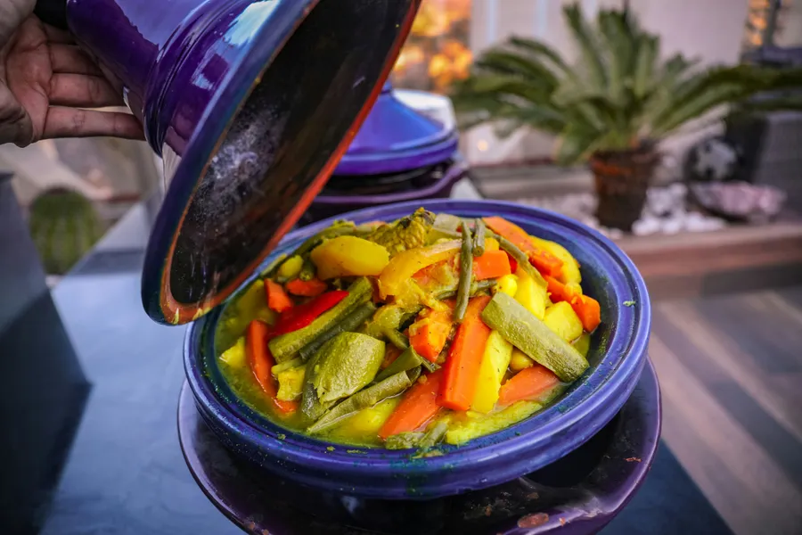
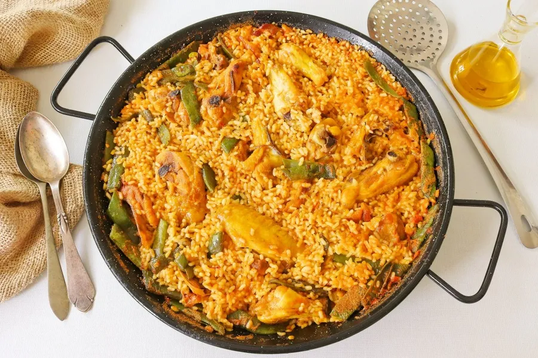

Cocina italiana
Pasta, pizza y recetas clásicas.
Ver categoríaUn recorrido por la gastronomía internacional
Un viaje gastronómico por distintas culturas a través de sus platos más emblemáticos y recetas tradicionales.
Descubrir platos
Pasta, pizza y recetas clásicas.
Ver categoría
Platos llenos de sabor y tradición.
Ver categoría
Dulces irresistibles.
Ver categoría
Uno de los platos más famosos de España.
Ingredientes: arroz, pollo, conejo, judía verde, tomate, aceite de oliva, azafrán y caldo.
Preparación: se sofríe la carne con verduras, se añade el arroz y el caldo, y se cocina a fuego medio hasta que el arroz quede seco y en su punto.

Receta típica del norte de África.
Ingredientes: sémola de cuscús, pollo o cordero, zanahoria, calabacín, garbanzos, cebolla y especias.
Preparación: se cocina la carne con verduras y especias, se prepara la sémola al vapor y se sirve todo junto con caldo por encima.

Postre cremoso y delicioso.
Ingredientes: queso crema, huevos, azúcar y base de galleta.
Preparación: se hornea hasta conseguir una textura suave y cremosa.